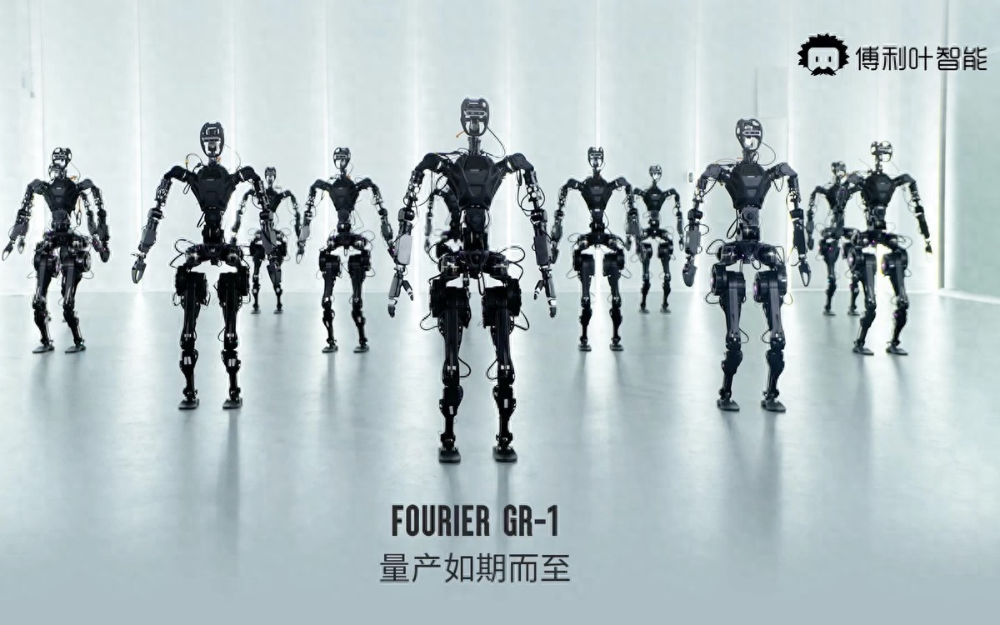
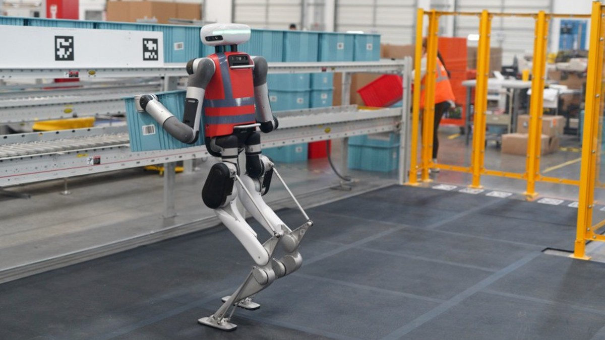
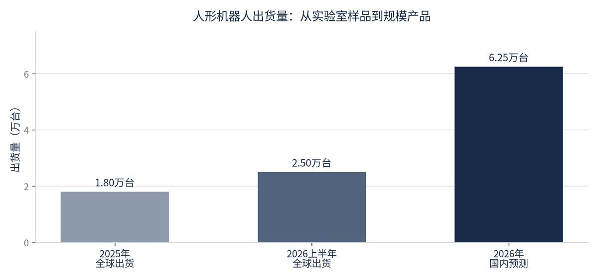
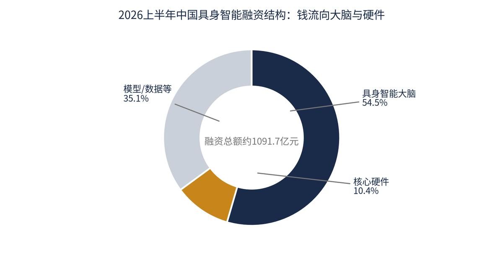

高工咨询预警人形机器人洗牌，融资818亿却遇冷
高工咨询在 11 月 3 日的年会上抛了一组数字：今年前三季度，中国人形机器人本体领域融资 818.2 亿元，灵巧手等零部件又拿了 148.3 亿元。钱确实不少。但同一份预测接着说，未来三年会有 15% 以上的人形机器人公司被淘汰或并购。
我把这条核查了一遍，不是某家自媒体随口说的。第一财经、新浪、BT 财经、三个皮匠报告都转述了同一出处——高工咨询总经理郑利瑶的原话，数字一字不差。所以「15% 出局」是机构研判，不是已发生的既成事实，但多家口径一致，可信度不低。
融资热、淘汰也近，根子在落地慢。高工的判断是，今年国内整机出货预计超 5 万台、全球近 6 万，但低于年初「超 6 万」的预期。高工还提到，今年关节模组整体售价同比下降约 30%，2027 年各尺寸整机还要再降一截——价格战已经提前打响。一边是 Agility 的 Digit 5 推进纳斯达克上市，招股书头一回把 RaaS 成本、关联交易、日历填满率摊开；另一边，四川具身的「爱湫」拿了超 1 亿元 pre-A，用 3D 投影面部、能识别 15 类情绪，9.8 万元起售。赛道正从「讲故事」转向「算清账」——产量不等于生产力，能不能在真实岗位持续干活，才是健康度的标尺。

Agility Digit 5 推进纳斯达克上市，招股书首度摊开成本结构

MIT与沃顿研究：AI编程让提交暴涨，审查却成新瓶颈
今天几条研究凑到一起，让「AI 编程提效」的说法站不住了。MIT 与沃顿通过 NBER 工作论文追踪了 50 多万名 GitHub 开发者：补全类工具约带来 30% 的周提交增长，叠加同步或异步 agent 后，累计关联升到约 180%–240%。
哈佛看了 718 家企业的数据，编码 agent 关联代码量 +30%、提交 +20%、PR +23%，但「已解决的 Jira 工单」没有显著上升。更扎心的是 PR 合并时长：从 7.03 天拖到约 10.5 天，收到修改要求的比例从 13% 升到约 25%。Atlassian 调研了 1155 名开发者和 405 位管理者，87% 的人说 AI 让写代码和交付更快，可 65% 在花时间审改 AI 产物，72% 觉得交付摩擦没降甚至更高。一份游戏协作实验也给出旁证：900 多局对抗里，纯人队胜率 84%，人类带一个 AI 反而更稳，agent 加到四个胜率一路往下掉。
AI 把周提交拉高到 240%，把合并时长也拖到 10 天——你以为上了 agent 是加速，其实是把堵车从乡道挪上了高速。
我的判断是：瓶颈已经从「生成代码」转移到「审查、协调、验收」。agent 能造出比团队能消化得多的代码，可真正的约束在人的 review 能力和责任归属。企业上 agent 前先把评审闸门和预算护栏搭好，否则只是让欠的账涨得更快。

智能体变成可上架商品，MCP月下载破9700万
半年前做 agent 还得自己写代码、自己找客户；到 11 月，已经出现了六大上架市场。MCP 这个协议由 Anthropic 发起、现归 Linux 基金会治理，月下载量已破 9700 万。Salesforce 把 AppExchange、Slack、Agentforce 合并成 AgentExchange，单季 2.9 万单、8 亿美元年化收入；微软的 Marketplace 给 Premium 会员最高 3 万美元 Azure 赞助，已挂 5000 多个方案；Poe 上顶级创作者月入能到 1.5 万美元。
能卖钱的 agent 都不是通用助手，而是 speed-to-lead（秒回询盘、约会议）、客服、合规、内部知识库这类窄问题。普通人最轻的四条路：本地小店内容供应商（月费 500–1500 元/店）、垂直行业小助手定制、个人知识封装（提示词包 9.9–39.9 元上架闲鱼）、一人公司后台。工具已经 no-code/low-code，个人零代码就能交付。
但要清醒：行业数据显示，只有 11%–14% 的企业 agent 试点走到规模化生产，绝大多数失败在「接线」——集成、护栏、监控与升级路径，而不是模型本身。我更看好「按结果收费」这条，因为它不依赖模型会不会升级，卖的是确定性。这恰好是普通人能把一次搭建反复卖掉的缝隙。
额度都是有时效的，看到就先去点一下。
发现哪条已经结束了，欢迎在评论区指正。